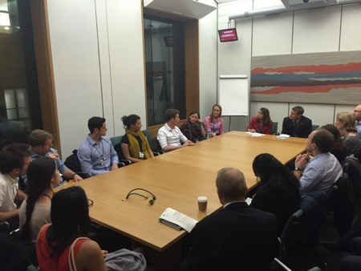
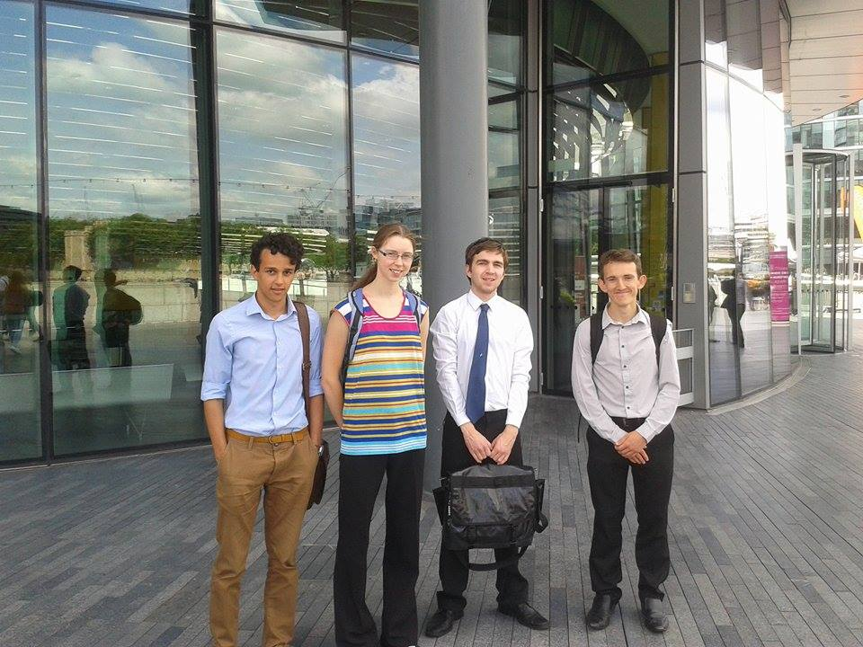
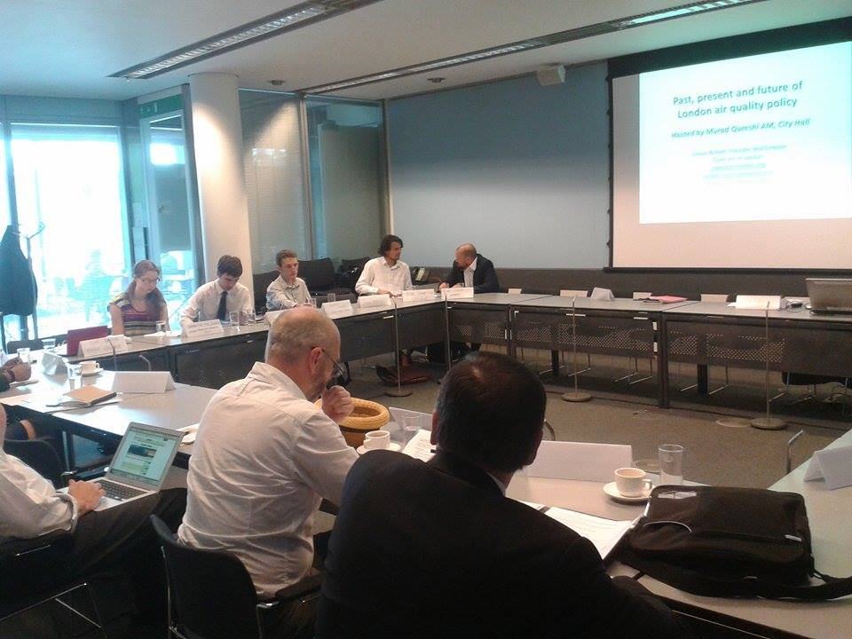

Blogs
- #juniorcontracts, LFSP and how I found my first slice of democracy07/12/15
As a final year medical student, hopeful junior doctor and passionate supporter of the NHS, the current dispute between doctors and Jeremy Hunt has been incredibly disheartening. I won’t go over the issues here, except to mention a heartfelt video and an admirably lucid blog. That’s what you need to know for starters. Instead, I’m going to write about the first time I ever met my own MP.
Aside from reviving my otherwise terminal Facebook wall with some casual clicktivism, I went to LFSP’s first roundtable event on the issue. The debate was open, engaging and well-informed; no small thanks to the committee for producing an invaluable briefing for everyone there. With non-medics making up 90% of the attendees, the range of views was a refreshing change to my necessarily self-selected social media stream. Even still, it was encouraging to hear support from people outside the profession.
Inspired by these conversations and armed with LFSP’s briefing I decided to engage with our democracy in a more old-fashioned way: to reach the giddying political heights of writing to my MP. Expecting nothing in return, I fired off a 5-line email to Tulip Siddiq (MP for Hampstead and Kilburn). To my astonishment I received a reply the next day outlining what Tulip was doing and what she intended to do about the issue. In fact, I’d asked her to put her name to a parliamentary motion supporting junior doctors, and she actually had! “OK democracy,” I thought “maybe you are real”, and I rested easy for the week, feeling as though I’d sort of done something.
The (not exactly round) roundtable in Portcullis House with junior doctors, MPs and medical students.Just a week later, I got an email from Tulip inviting me to a roundtable discussion at the Houses of Parliament. The next day, with my crumpled briefing in hand, I hurried to the fortress opposite Big Ben, Portcullis House. Inside, joined by 20 or so junior doctors across their careers, we discussed the contracts for over an hour while our extraordinarily attentive MP hastily jotted notes on our conversation.
In the end, Tulip didn’t get time to speak in the debate she’d asked us to help her prepare for, but for the first time I felt like in a very very very miniscule way I’d been able to positively participate in our democracy.
Of course, junior doctor contracts shouldn’t be the biggest thing on the agenda. There are many issues which are more deserving of our attention; but unlike many of those, this time I felt equipped with the right experience and the right knowledge at the right time to be able to say something useful.
If you want to email any of your representatives about anything writetothem can help you do it.
- Air Pollution Policy Roundtable31/07/15
Prior to my first LFSP meeting I wasn't aware the UK was in breach of EU air quality laws, but when the subject was raised by other students it caught my interest and I joined their group. A little over 6 months later, we had researched, written and presented our policy paper "Clearing the air: How to resolve the UK breaches of EU air quality laws". The paper summarises the causes and effects of UK air pollution, policy solutions that have been tried here and abroad, and proposes our own novel solutions (based on incentivising cycling, urban greening, electrification of public transport as well as changes to the private vehicle fleet).
The team outside City HallFrom this, we were lucky enough to receive an invitation to a roundtable discussion at City Hall. The roundtable brought together politicians, academics and business and community representatives, and after opening words from Murad Qureshi and an introduction outlining the legal and health issues from Simon Birkett (both of whom had spoken at the presentation of our paper and given some extremely useful feedback), the floor was opened to discussion.
The purpose of the roundtable seemed quite similar to our paper, to outline the causes and effects of air pollution and come up with potential policy solutions. But the nature of the event, with its wide representation of interest groups and interactive format, really enhanced my understanding of the complexity of the issues and the broad scope of solutions needed to tackle them.
At the roundtableTo me, the discussion really emphasised the need for cooperation in designing and implementing policies, not only between nations, regions and the public and private sector but at also at smaller scales, for example between different government departments. It also highlighted how no policy solution exists in isolation, not only do they have different costs and benefits, but the effects vary over different timescales and depend on other policies implemented.
I certainly learnt a lot from the roundtable, and hopefully it will be useful in informing further political debate and decisions on the air pollution problem.